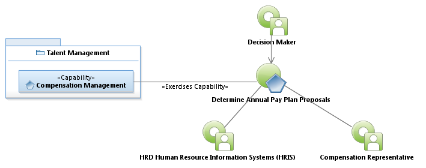
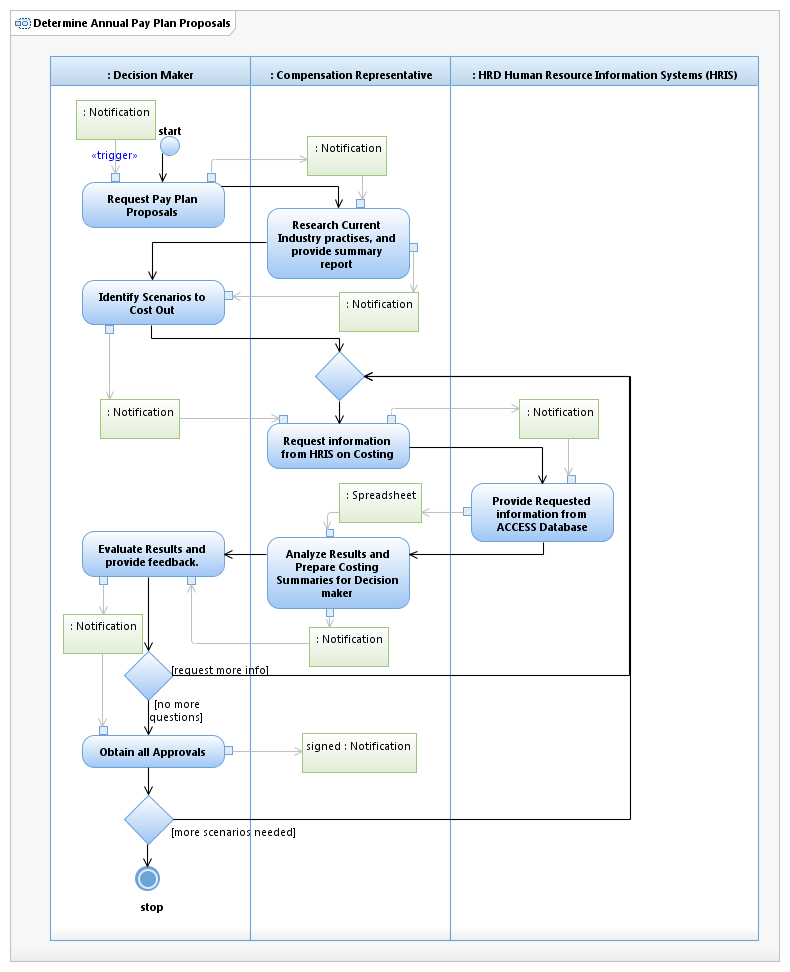

Use Case Model: Determine Annual Pay Plan Proposals
Architect: Aaron Brown, IT Enterprise Architect Senior
Date Last Modified: 2/28/2013
User Review: Perry Perez, Holly Moyer, Tommy Tucker
Date: 2/28/2013
Determine the employee reward plan i.e. ( pay for performance, vs Across the board, lump sum vs. base increase)
Follow link to Role Definitions

Use Case Model: Determine Annual Pay Plan Proposals

Activity Model: Determine Annual Pay Plan Proposals